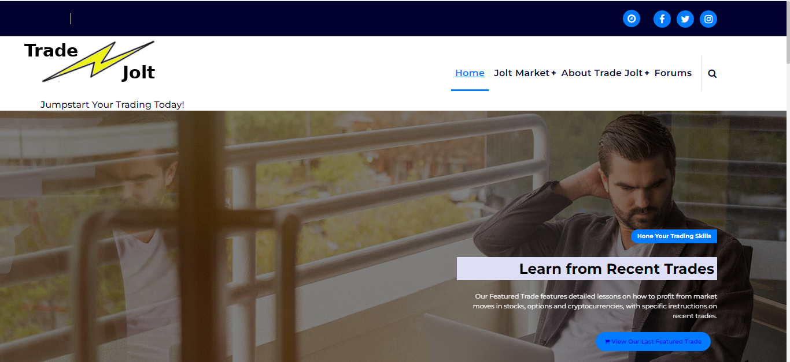
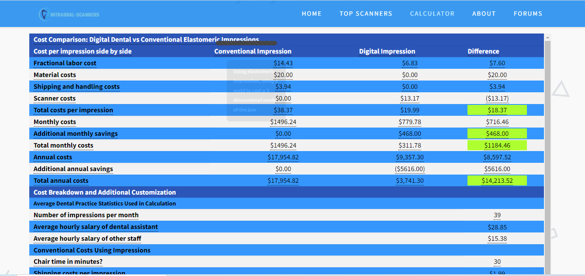
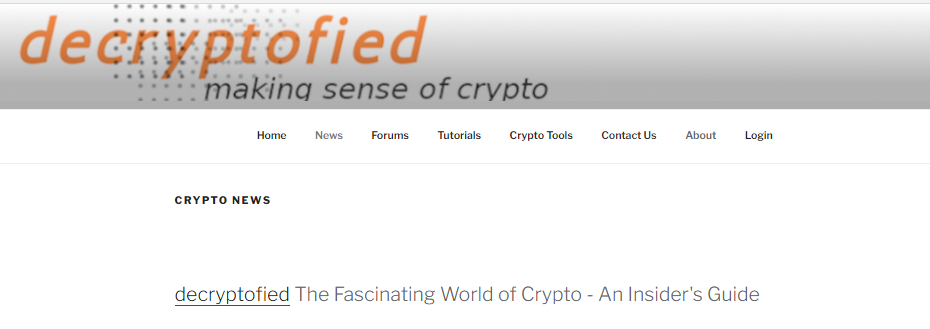
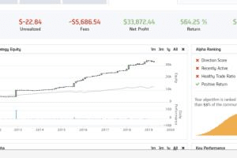
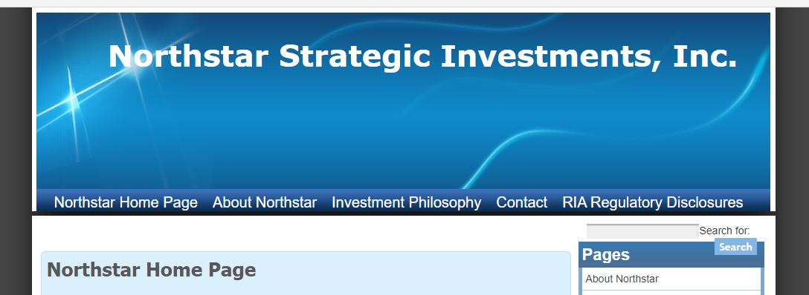

TradeJolt is an educational site dedicated to the active trader. This is my own venture. It aims to become the Ebay of financial opportunities,
matching individual and institutional investors to investment experts. The site uses a database comprised of over 40 tables,
a custom-made rating system, and the Wordpress framework merging standard plugins with a custom TradeJolt plugin. The site is built for
privacy, speed and data redundancy.

This web site was developed for a leading US distributor of dental equipment to
increase market visibility among dental professionals.
Instead of a traditional branding of the distributor's product line pitching for customers,
the idea was to develop a neutral, unbiased comparison tool and peer reviews that would appeal to
all dental professionals.
The site focuses on intraoral scanners one of the leading emerging dental technologies.
Unique in the web site is a custom made Google spreadsheet which
dynamically prices a dentist's unique inputs and customizes a cost-benefit analysis of different
product choices. This tool has started to produce a slow but steady flow of new selling leads. I
handled all aspect of the project, from original concept, to business plan, to market segmentation, to actual design and launch.
The site deploys a Wordpress scaffolding, with heavy use of CSS, and a tailored Google spreadsheet.

This is an ongoing project centered on all things crypto. decryptofied dives into the world of crypto and how it impacts business, investments and your wallet.
I'm the architect, designer and content publisher for the site. decryptofied was designed around the Wordpress template engine, with heavy use of custom CSS and PHP languange to achieve site functionality.
April 18, 2017 - Jan 2020

QuantConnect is an open-source platform permitting traders and programmers to create world-class, automated trading solutions in Python or C++ and to link these to their
live brokerage accounts. From 2018 on I developed the financial logic and wrote the Python code for over 60 unique trading strategies, three of which I still actively deploy today
in my clients' Interactive Brokers accounts. The web link provided below is only to public sections of the platform. My proprietary algos
are encrypted and access to the code and its reports are secured for private use only. A sampling of trading results from these algos can be provided upon request.
QuantJolt was launched in a joint partnership with another trading guru. I developed the site based on a number of algorithms we had jointly collaborated on. The project was later abandoned by my partner, who had to pursue a different
professional path. I decided to close down the website to focus more heavily on my other activities, which were increasingly centered on cryptocurrencies and a new marketplace for investment ideas (TradeJolt).
Clara Valencia Leatherware was a project designed for a client wishing an easy-to-administer site
with great navigation and a professional, sumptuous look. I used a WIX templating solution and custom colors,
background and photography.The customer has now outgrown the site and we are trasitioning over to a Wordpress platform with a
simliar look and feel but more powerful underpinnings.
Great Investment Strategies is a business blog I use to explore long-term investment trends and indulge in my passion for investing. The blog was developed with a Wordpress theme customized using CSS and PHP. It incorporates a half-dozen standard Wordpress plugins.

This is a simple Wordpress website I built in 2008 to support the formal requirements of my RIA (Registered Investment Advisory) business.
It's a fairly static site, intended to act as an Online Business Card and prompt any visitors to contact us directly. I use the site
also to publish and update the Terms and Conditions of my RIA.
Travel Jungle was one of the first web sites to use techniques of screen scraping and XML to create a centralized marketplace of discount airfares and hotels.
The site blended the offerings of airlines available in the mainstream CRS with those of unafilliated airlines featuring fares only on their
own websites. A precursor to today's Kayak or Trivago, Travel Jungle quickly achieved natiponal
recognition for its innovative use of leading web technololgies to transform the consumer travel business. This included being featured
on the cover page of one of Germany's leading business publications. The firm thrived until early 2020, with branches in four countries, but proved
unable to adapt to the total freeze in global travel brought upon by the Covid epedemic.
The firm closed its doors in 2021.